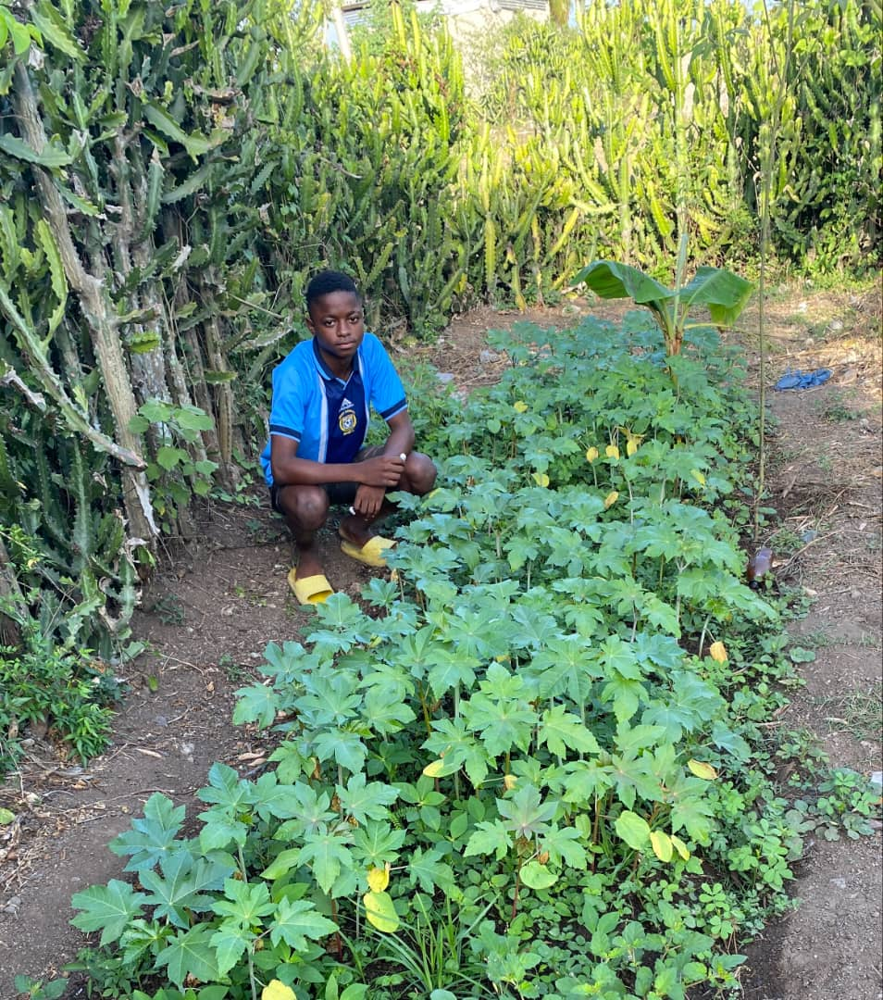
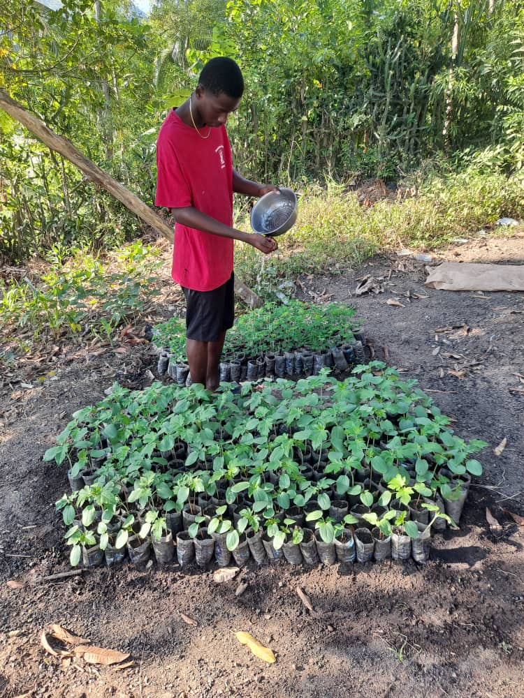
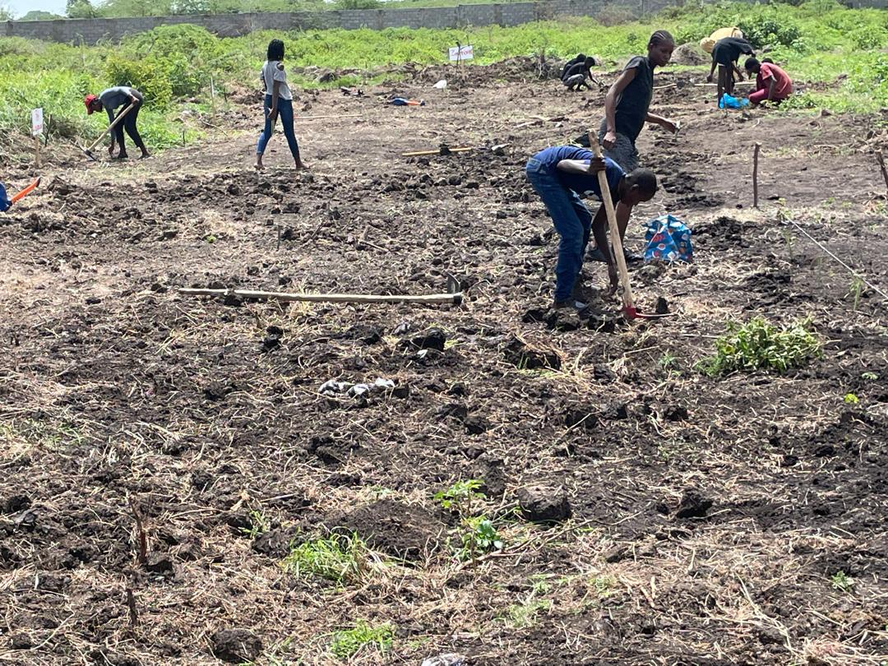
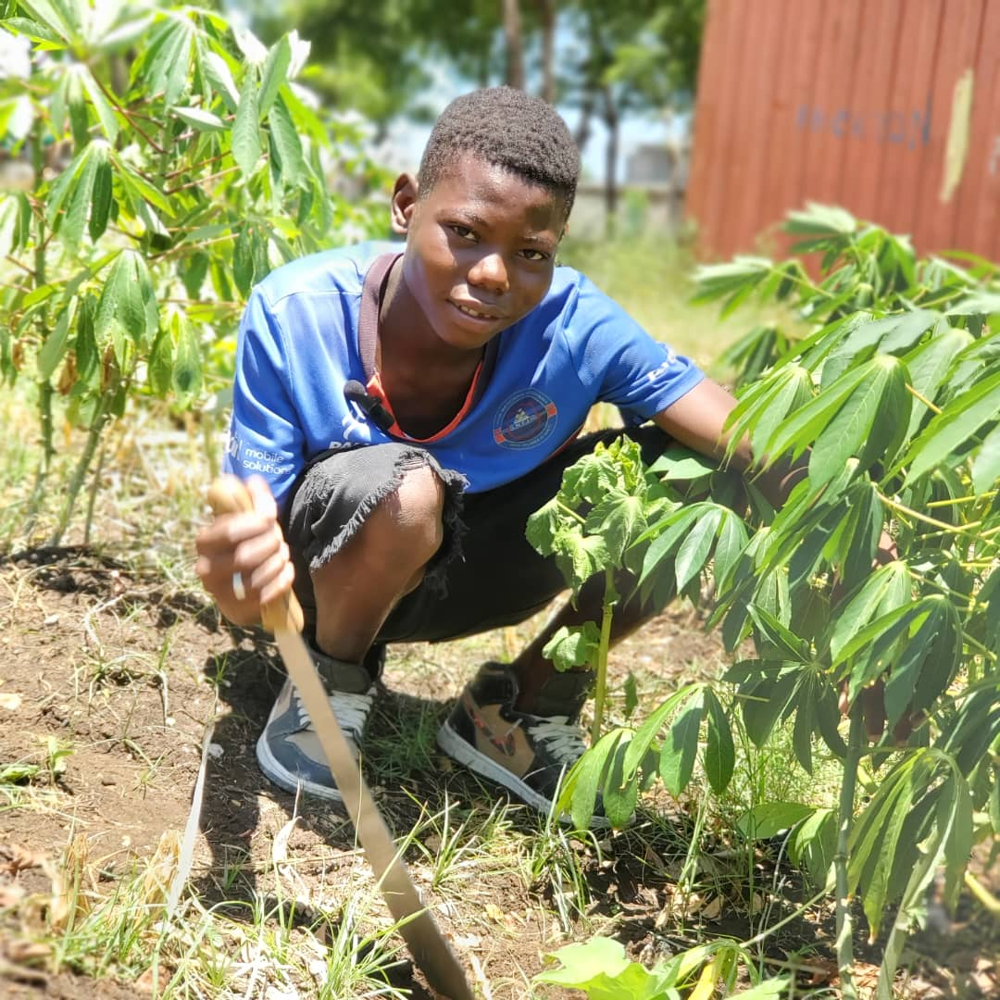
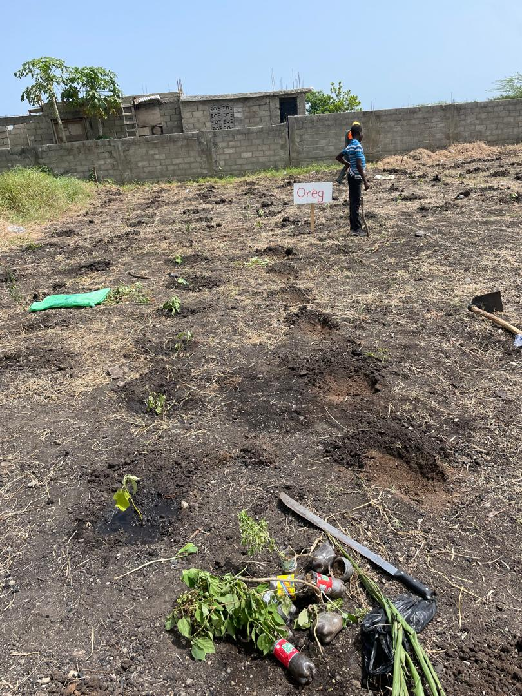
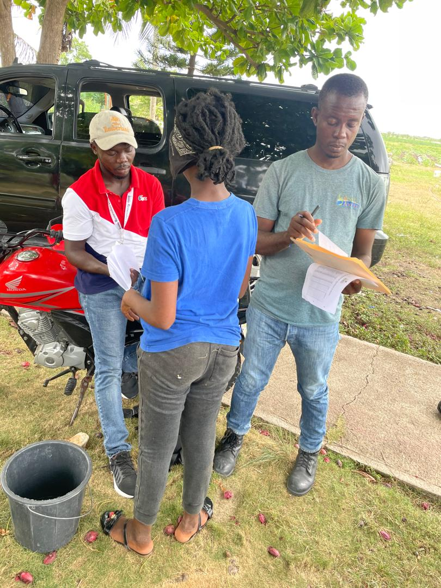
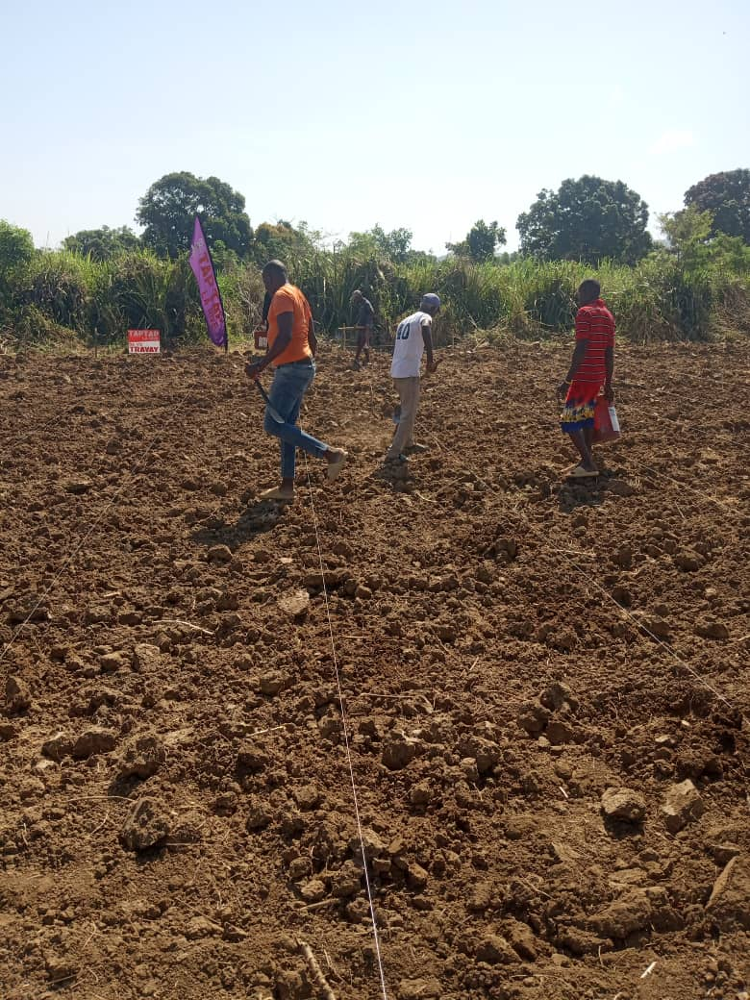

Nou plante kè kontan, nou rekòlte lavi
Grand Bassin · Milot, Nord, Haïti · KONKRET × BARSS


SAKALA est le programme d'apprentissage agricole intensif de KONKRET. Pendant 8 semaines, 15 jeunes de Milot et environs travaillent côte à côte sur 21 acres de terrain à Grand Bassin -- formation technique, encadrement personnalisé, salaire régulier et certificat à la sortie.
Ce n'est pas un stage. C'est une coopérative en mouvement. Chaque participant apprend à cultiver, à gérer, à collaborer -- et repart avec des compétences concrètes, une expérience réelle, et un réseau solide.
Le programme Summer 2026 est la première phase d'un modèle destiné à accompagner 50 000 connexions électriques dans la région de Milot en partenariat avec BARSS.
Nou plante kè kontan, nou rekòlte lavi. On plante avec joie, on récolte la vie.
Devise du programme SAKALA, Grand Bassin

Chaque participant choisit une piste principale et développe des compétences transversales. La polyvalence est la règle.

360 dollars couvrent tout. Pas de frais cachés. Chaque centime va directement à la formation et au soutien du participant. Voici la répartition exacte.
Sponsoriser un Jeune


360 dollars. Un jeune formé. Huit semaines de transformation. Vous recevez des mises à jour terrain directement de votre participant via le portail sécurisé SAKALA.
Accéder au PortailTu as entre 18 et 35 ans. Tu es motivé. Tu veux apprendre, travailler, et contribuer à ta communauté. Dépose ta candidature dès maintenant.
Je Veux Participer